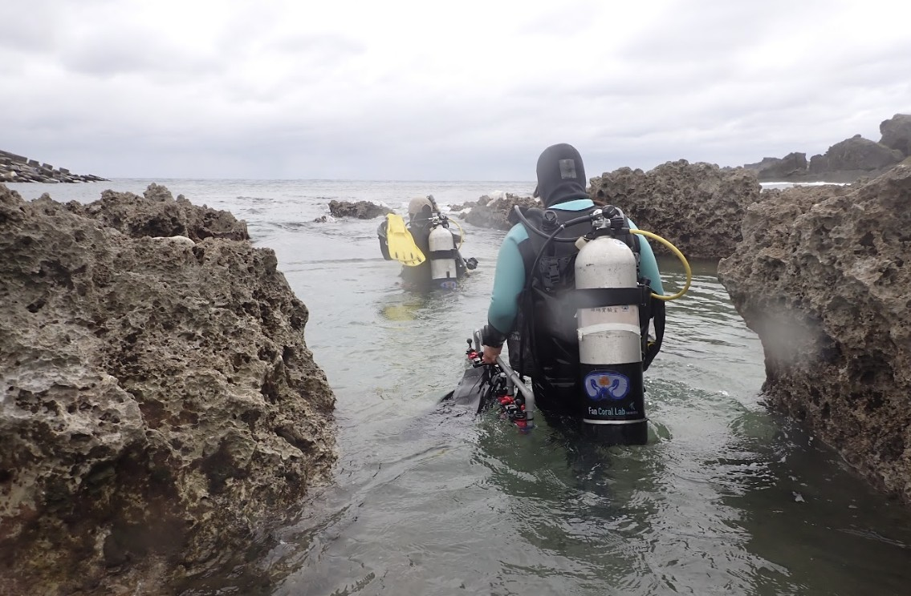
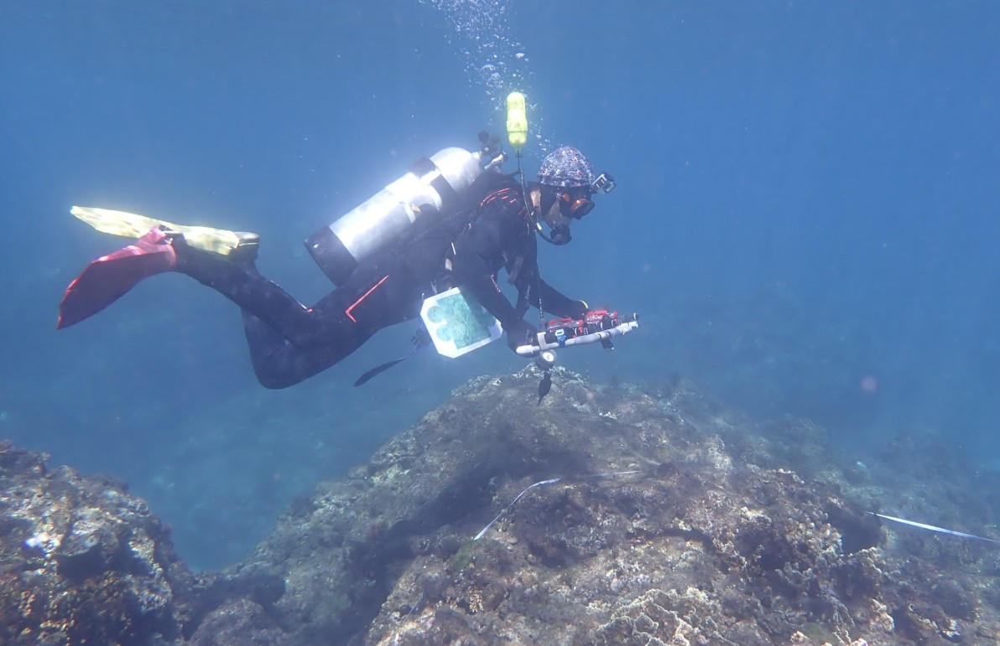
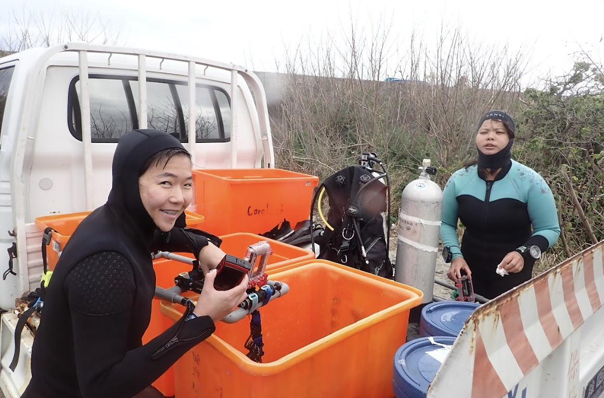
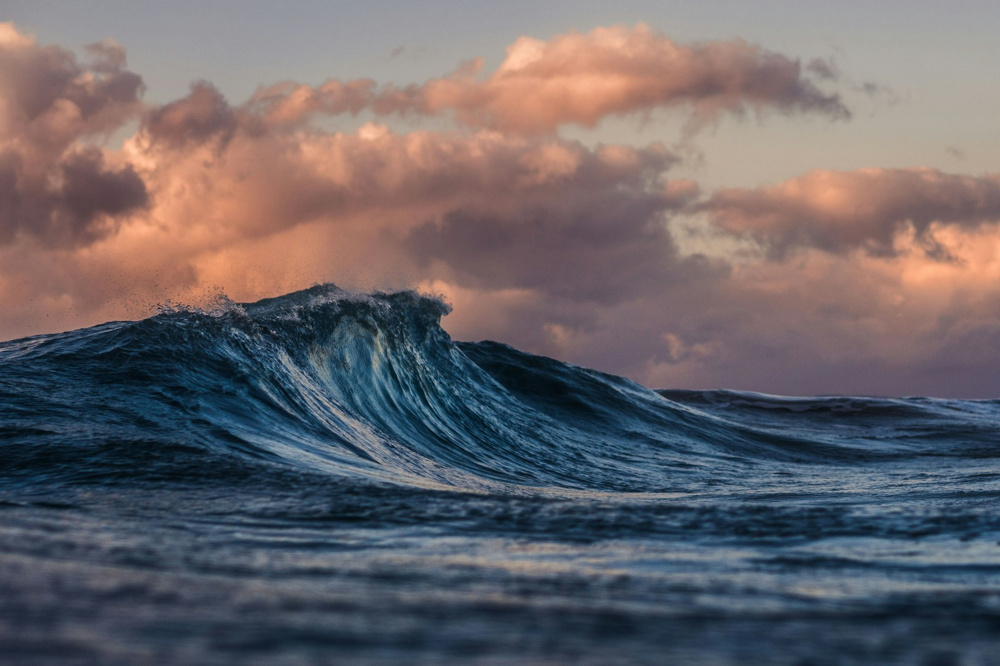

First dive of the 2025 spring survey season at Green Island. Water visibility was exceptional at around 25 m. Found encouraging signs of juvenile coral recruitment on the northern slope — a hopeful note after last year's bleaching event. 2025 年春季調查季的第一次潛水，在綠島北岸斜坡發現令人振奮的珊瑚幼苗補充跡象——去年白化事件後的一個希望訊號。能見度約 25 公尺，海況極佳。
Gave a public talk on coral bleaching and climate change to a general audience at the National Museum of Marine Biology and Aquarium. Wonderful to connect with curious visitors of all ages — from primary school kids to retired marine enthusiasts. 在國立海洋生物博物館進行珊瑚礁白化與氣候變遷的公開演講，與各年齡層的好奇訪客交流——從國小學童到退休的海洋愛好者——令人心情愉快。
Completed Q1 2025 surveys at all six Kenting monitoring stations. Hard coral cover at Station 3 (Houbi Lake) has declined by ~4% since the autumn survey, consistent with thermal stress recorded in Jan–Feb. Installed two new temperature loggers at depth. 完成 2025 年第一季墾丁六個監測站的調查。後壁湖（3 號站）的硬珊瑚覆蓋率自秋季調查以來下降約 4%，與 1–2 月記錄的熱壓力相符。在深水處新安裝兩個溫度記錄器。



Very happy to share a feature article on the 2024 mass bleaching event published in this month's issue of Scientific American Taiwan. Grateful to the editors for the opportunity to bring this story to a broader readership. 很高興在本期《科學人》雜誌分享一篇關於 2024 年大規模白化事件的專題報導，感謝編輯讓這個故事得以傳達給更廣泛的讀者。

Presented our latest findings on latitudinal bleaching thresholds at the International Coral Reef Symposium in Honolulu. Great conversations with researchers from across the Indo-Pacific. The conference energy was equal parts urgent and hopeful. 在火奴魯魯國際珊瑚礁研討會（ICRS）發表關於白化閾值緯度差異的最新研究成果。與來自印度洋—太平洋各地的研究者進行了深刻的交流——會議氣氛既緊迫又充滿希望。
